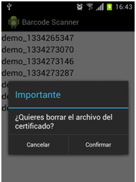

Uso de certificados para autenticación de aplicaciones Android
Seguridad Informática
Ignacio Baca Moreno-Torres
Fernando Jesús Fernández Carillo
Alberto Jimenez Ruiz
Abril 2012
Ignacio Baca Moreno-Torres
Fernando Jesús Fernández Carillo
Alberto Jimenez Ruiz
Abril 2012

Establecer un canal seguro entre Android y Servidor
Autenticar la aplicación Android en el Servidor
Revocar certificados de cliente


echo "Firmando la peticion con la autoridad AndroidAuth"
openssl x509 -req -days 365 -CA AndroidAuthCA.crt \
-CAkey AndroidAuthCA.key -CAcreateserial \
-in certs/${CERT}.csr -out certs/${CERT}.crt
echo "Actualizando listado CRL..." openssl ca -config openssl.cnf -revoke certs/$FILE.crt echo "Actualizando listado CRL..." openssl ca -config openssl.cnf -gencrl -out crl.pem
SSLEngine on SSLCertificateFile /home/ibaca/android-auth-cert/home.bacamt.com.crt SSLCertificateKeyFile /home/ibaca/android-auth-cert/home.bacamt.com.pem SSLCACertificateFile /home/ibaca/android-auth-cert/AndroidAuthCA.crt SSLCARevocationFile /home/ibaca/android-auth-cert/crl.pem SSLVerifyClient optional
<? include "../phpqrcode.php" ?>
<h3>Generacion de certificados</h3>
Usuario actual <b><? print($_SERVER['REMOTE_USER']) ?></b>
<a href="https://logout@home.bacamt.com:83/">[logout]</a>
<p>Se esta generando una clave nueva...</p>
<?
$user=$_SERVER['REMOTE_USER'];
$time=$_SERVER['REQUEST_TIME'];
$p12="${user}_${time}.p12";
?>
<a href="https://home.bacamt.com:83/download/<? echo $p12 ?>">
<img src="https://home.bacamt.com:83/download/<? echo $p12 ?>.png">
</a>
<?
function print_row($text, $row) { echo "$text\n"; }
exec(".../android-auth-cert/generate $user $time 2>&1", $result, $status);
exec("cd .../android-auth-cert && ln -s ../../certs/$p12 www/download/");
?>
<h4>Resultados de la generacion de clave</h4>
<pre><?
array_walk($result,"print_row");
QRcode::png("https://home.bacamt.com:83/download/$p12", "../download/$p12.png", 'H', 6, 1);
?></pre>

keytool -import -alias "rootCert" -file AndroidAuthCA.cer
-keystore truststore -storetype BKS
-provider org.bouncycastle.jce.provider.BouncyCastleProvider
-providerpath ./bcprov-jdk16-145.jar


SSLSocketFactory sslf = new SSLSocketFactory(clientCert, null, trusted);
SchemeRegistry schemeRegistry = new SchemeRegistry();
schemeRegistry.register(new Scheme("https", sslf, 443));
HttpClient client = new DefaultHttpClient(new ThreadSafeClientConnManager(
request.getParams(), schemeRegistry), request.getParams());

public void llamadaQR() {
Intent intent = new Intent("com.google.zxing.client.android.SCAN");
intent.putExtra("SCAN_MODE", "QR_CODE_MODE");
startActivityForResult(intent, 0);
}
public void onActivityResult(int requestCode, int resultCode, Intent intent) {
if (requestCode == 0 && resultCode == RESULT_OK) {
String contents = intent.getStringExtra("SCAN_RESULT");
try {
downloadCert(contents);
} catch (Exception e) {}
}
}
